ASHLAND · Seamless Hex Set
9 Grundgelände × 3 Varianten; Straßen und Flüsse als transparente 6-Kanten-Verbindungs-Overlays (je 64 Masken). Die gemeinsame Grundtextur liegt unter den transparenten Hexdetails.
Grundgelände
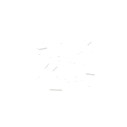
Open Ground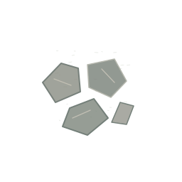
Rubble Field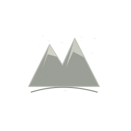
Mountain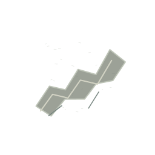
Ridge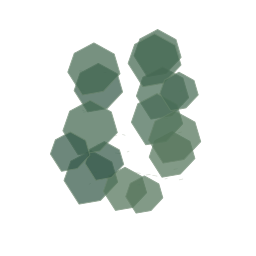
Forest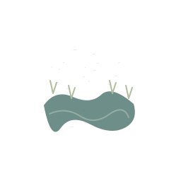
Marsh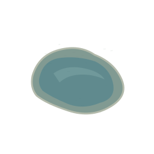
Water / Pond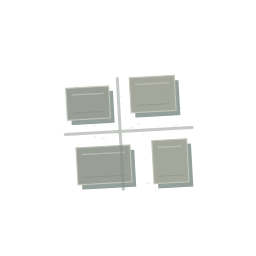
Urban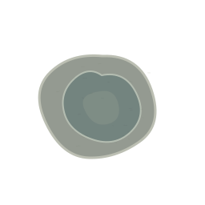
CraterStraße
ROAD · 000000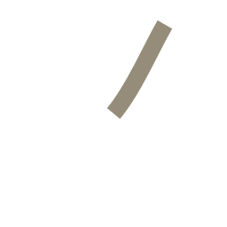
ROAD · 000001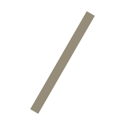
ROAD · 001001ROAD · 010010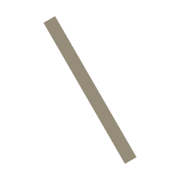
ROAD · 100100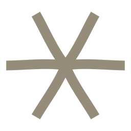
ROAD · 111111 Fluss
RIVER · 000000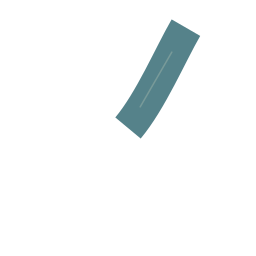
RIVER · 000001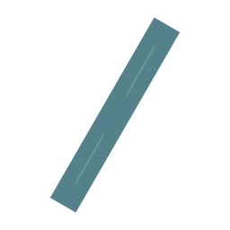
RIVER · 001001RIVER · 010010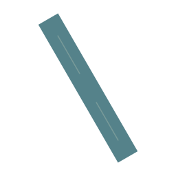
RIVER · 100100RIVER · 111111